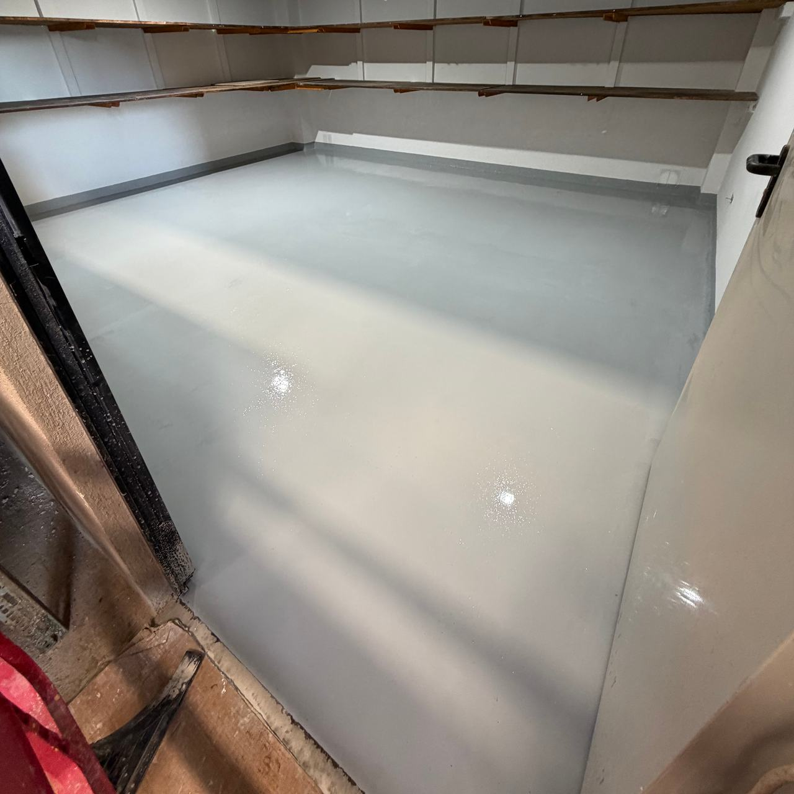
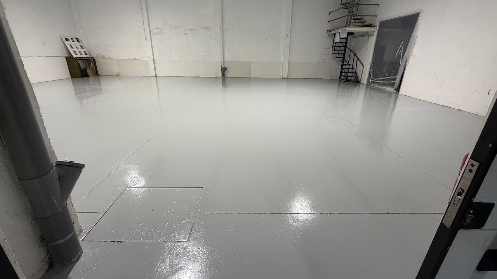
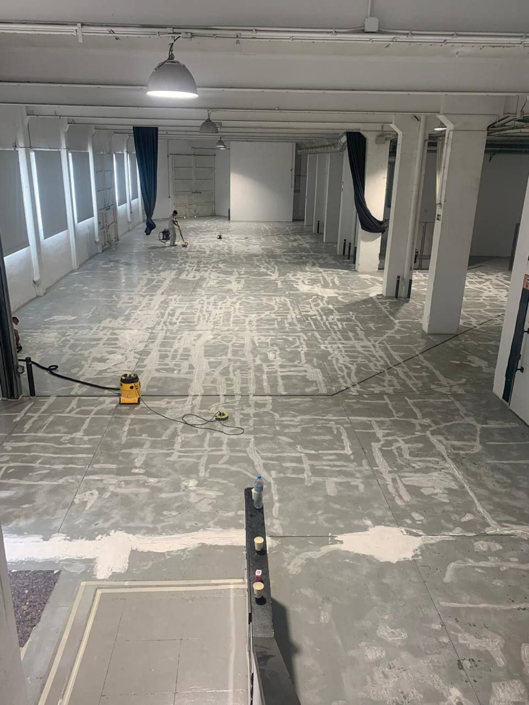
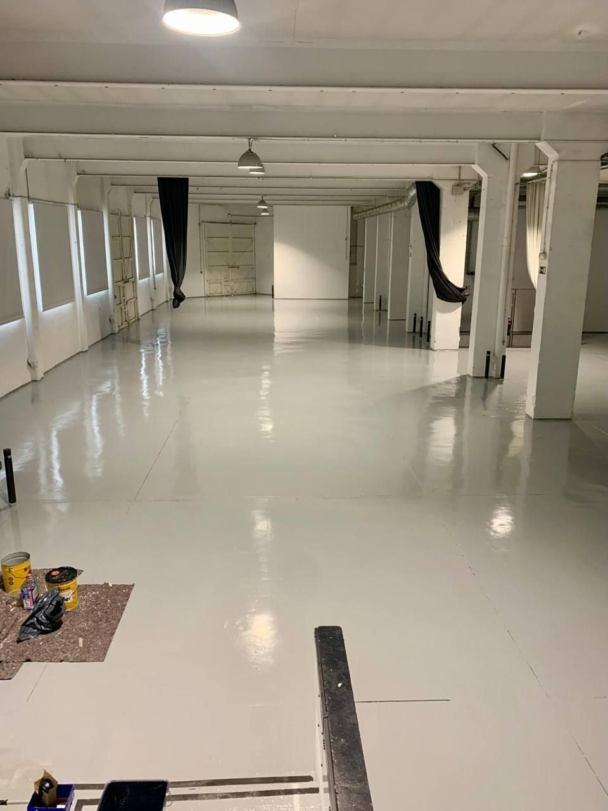
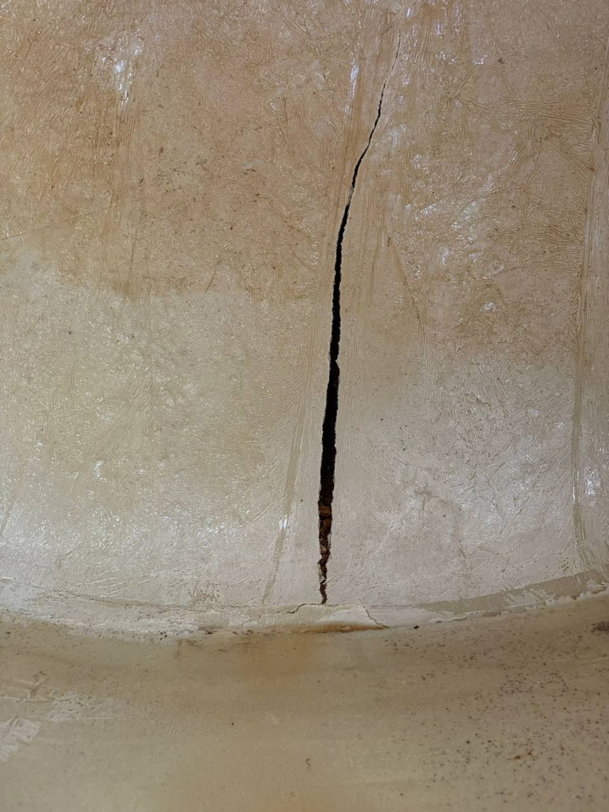
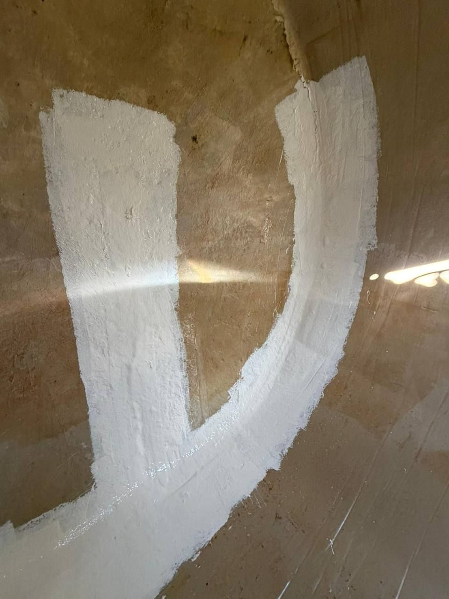

Acabats per a naus que no es poden aturar
Paviments epoxi i de poliuretà, pintura d’estructures metàl·liques i impermeabilització de cobertes a Terrassa, el Vallès i la resta de Catalunya. L’obra s’adapta al teu calendari de producció, no al revés.

La teva nau continua treballant
Un paviment continu demana tres coses que xoquen amb la producció: la zona buida, el suport preparat i unes hores de curat sense trànsit. Això no es pot saltar. El que sí que es decideix és on i quan.
Per això dividim la nau en zones i les anem alternant: mentre una és en obra i l’anterior cura, la resta continua en ús. Una altra opció és concentrar els treballs en una aturada de l’activitat; ho decidim amb tu.
Els temps depenen del sistema, del gruix i de la temperatura de la nau. Te’ls donem abans de començar, zona per zona, perquè puguis organitzar torns, prestatgeries i molls.
| Zona A | Zona B | Zona C | |
|---|---|---|---|
| Fase 1 | En obra | En ús | En ús |
| Fase 2 | Curant | En obra | En ús |
| Fase 3 | En ús | Curant | En obra |
Terra, estructura i coberta
Són les tres superfícies que més pateixen en una nau: rodes i cops a baix, humitat i rovell al mig, sol i pluja a dalt. Cadascuna té la seva pàgina amb el sistema, el procés i fotos de la nostra feina.
Paviments epoxi i de poliuretà
Terres continus per a naus, magatzems, tallers i locals: del suport a l’acabat llis o antilliscant.
Pintura d’estructures metàl·liques
Pilars, encavallades, portalades i serralleria: treure el rovell i protegir amb un sistema per capes segons l’ambient.
Impermeabilització de cobertes de nau
Membrana de poliuretà líquid contínua, sense encavalcaments, que s’adapta a cargols, canals i trobades.

Primer l’ús, després el producte
Dues naus amb el mateix terra gris poden necessitar sistemes molt diferents. Aquestes són les preguntes que fem a la visita, i les que decideixen el material i el gruix.
- Què hi passa per sobre
- Només persones, transpaletes, carretons elevadors o rodes dures. Com més pes i més girs, més gruix i més resistència a l’abrasió.
- Què cau a terra
- Olis, combustibles, àcids, dissolvents o simplement aigua. Cada producte ataca d’una manera i hi ha resines que l’aguanten millor que d’altres.
- Com es neteja
- Amb fregadora, amb aigua a pressió o amb aigua calenta. I, si el terra estarà mullat, si ha de ser antilliscant.
- Sol i temperatura
- Les resines epoxi groguegen amb el sol directe. A l’exterior, a tocar de portalades obertes o amb canvis bruscos de temperatura sol anar millor un poliuretà.
- Com és el suport
- Humitat que puja del terreny, fissures, juntes, restes de pintura vella o d’oli. És el que més falla i el primer que mirem.


La brillantor enganya; el que dura és el suport
Qualsevol paviment acabat de fer queda bé en una foto. El que el fa durar no hi surt: el fresat o el granallat del formigó, les fissures obertes i segellades, les juntes tractades i l’oli retirat abans de la primera capa.
En aquesta nau es veu bé: a l’esquerra, el formigó ja preparat i amb les zones malmeses reparades; a la dreta, el paviment continu acabat. La segona foto només és possible gràcies a la primera.
2009
Naus i oficines Hune
El nostre equip va participar en els acabats de tot l’interior de la nau i de les oficines d’Hune. En un encàrrec així, el terra de la nau, l’estructura i les oficines comparteixen calendari: convé que un mateix equip ho coordini perquè una feina no espatlli l’anterior.


Un dipòsit soterrat, reparat sense canviar-lo
Un dipòsit d’aigua de fibra de 15 m³, soterrat, s’havia esquerdat. En lloc de desenterrar-lo per canviar-lo, el vam reparar al seu lloc.
Vam reforçar la zona de l’esquerda amb fibra de vidre i la vam reparar. A l’esquerra, l’esquerda oberta a la paret; a la dreta, la mateixa zona reforçada.
De la visita a l’entrega
Quatre passos i, en tots, la mateixa pregunta: com afecta això la teva activitat.
Visita a la nau
Mesurem, veiem l’estat del terra, l’estructura o la coberta i preguntem per l’ús, els productes i les zones que no es poden aturar.
Proposta
Sistema, gruixos, repartiment per zones i temps de cada zona: quan es tanca, quan s’hi pot trepitjar i quan torna el trànsit.
Execució
Zona tancada i senyalitzada. Preparació del suport, reparacions, imprimació i capes, per aquest ordre i sense saltar-se cap pas.
Entrega
Revisem l’acabat amb tu i et deixem clar quan s’hi pot carregar, com s’ha de netejar i quin manteniment necessita.
Amb què treballem
Marques amb fitxa tècnica clara, perquè sàpigues què s’aplica a la teva nau i amb quin gruix.
- Paviments
- Pintura epoxi Isaval
- Cobertes
- Impermeabilització Mamper, poliuretà líquid 100 %
- Oficines i parets
- Pintures plàstiques Jotun
- Àmbit
- Terrassa, Sabadell, el Vallès, Barcelona i la resta de Catalunya
El que pregunta qui porta una nau
Quant de temps ha d’estar tancada cada zona?
Depèn del sistema, del gruix i de la temperatura. Com a referència general, molts paviments epoxi admeten pas a peu l’endemà i el trànsit pesant al cap d’uns dies; les dades exactes són les de la fitxa tècnica del producte triat. Te les donem per zona abans de començar.
Es pot pintar damunt del terra que ja tenim?
Sovint sí, si la capa antiga està ben adherida. Es comprova a la visita: el que s’aixeca s’ha de treure, i la resta es poleix perquè la nova capa s’hi agafi. Més detalls a paviments epoxi i de poliuretà.
Epoxi o poliuretà?
L’epoxi és dur i resistent a l’abrasió i a molts productes químics; és el més habitual en naus. El poliuretà és més elàstic i aguanta millor el sol i els canvis de temperatura. Sovint es combinen: base epoxi i acabat de poliuretà. Ho comparem a la pàgina de paviments.
També feu les oficines de la nau?
Sí. A Hune, per exemple, el nostre equip va participar en els acabats de tot l’interior de la nau i també de les oficines.
Fins on us desplaceu?
Som a Terrassa (carrer de Núria) i treballem al Vallès, a Barcelona i a la resta de Catalunya. El que fem a cada zona ho trobaràs a on treballem.
Digues-nos quan pots parar
Envia’ns els metres aproximats, a què es dedica la nau, unes fotos del terra, l’estructura o la coberta i les dates que et van millor. Amb això preparem la visita.